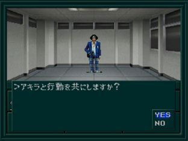

아키라 루트는 마계편을 1회 클리어 후에 유폐의 탑(幽閉の塔)에 갈 수 있다. ※ 유미, 찰리, 레이코 루트의 클리어 데이터가 필요하다.

- 클리어 데이터를 사용해 시작한다.
- 2F 복도 끝에 있는 풍기위원(風紀委員)으로부터 아키라의 정보를 얻는다.
- 학교 1F의 창고와 클럽의 방에서 무기, 방어구를 입수한다.
- 학교 1F의 계단(창고 측) 옆에서 아키라를 동료로 한다. (권유를 거절하면 동료가 되지 않는다. 주의)
- 컴퓨터실 앞에서 '유귀 가키'을 넘어뜨리고 사토군으로부터 악마 소환 프로그램을 받는다.
- 3F의 2-H에서 야와타 선생님(八幡先生)으로부터 암 터미널(アームターミナル)을 받는다.
- 1F의 용무원실(用務員室)의 맨홀로부터 「유폐의 탑」에 들어간다.
이후
땅의 노모스로 갈 수 있다.
조건이 맞으면 케르베로스도 중마로 만들고 출발할 수 있고, 히호군은 마계편과 동일하게 중마가 되어준다.